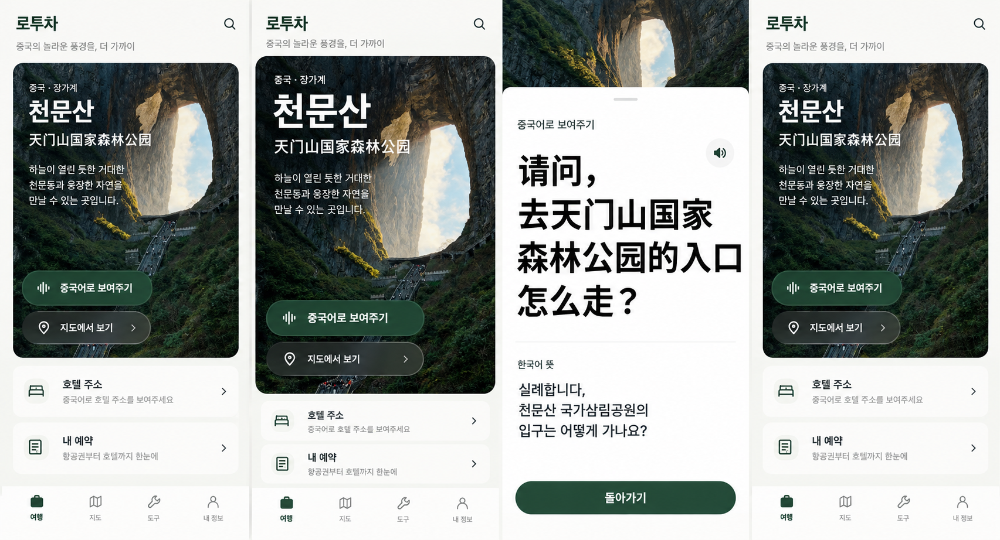

LOCALTOURCHINA · VISUAL REVIEW
先选你想要的感觉
同一张天门山卡片，三种视觉方案。
같은 여행 카드, 세 가지 디자인.

概览：先看卡片是否容易识别，操作是否醒目。
查看完整四屏图 ↗
这是 AI 生成的视觉样稿，页面按钮只切换样稿。图中文字、图标和功能以选定后的实际页面为准；当前不提供预约、地图或语音服务。图片中的天门洞为景观照片，不代表实际入园口。
디자인 검토용 이미지입니다. 실제 예약·지도·음성 기능은 제공하지 않습니다. 천문동 사진은 입구 안내가 아닙니다.
返回产品逻辑提案 / 기획안 보기